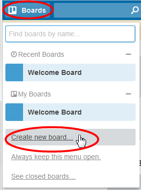

Starting a Trello board
Parent topic
:
Starting a Trello board
Creating a board
To create a new board, click
Boards
on the top menu bar, then click
Create new board
.

You can also start new boards directly from the organization page.
In the
Create Board
dialog:
Type a
Title
for the board.
If you want to share the board with the members of an organization, select it from
Organization
.
To set the visibility of the board, click
Change
.
Private
means only you and members you add to the board have access to it.
Organization
(if you enabled it) means only members of the organization can access the board (
Org Visible
).
Public
means the board is visible to anyone with a link to it and indexed by search engines.
Click
Create
.
Your new board is displayed and you can start adding lists and cards to it, and eventually adding members.
Related tasks
Keeping to-do lists
 XML Author
XML Author